Estatísticas do Servidor Web de audicore.com.br
Estatísticas do Servidor Web de audicore.com.br
Começo do programa em Dom-31-Ago-2025 00:48.
Análise de pedidos desde Sex-15-Ago-2025 00:28 até Sab-30-Ago-2025 19:09 (15,78 dias).
Estatísticas do Servidor Web de audicore.com.brComeço do programa em Dom-31-Ago-2025 00:48.
Análise de pedidos desde Sex-15-Ago-2025 00:28 até Sab-30-Ago-2025 19:09 (15,78 dias).
(Ir a: Início | Sumário Geral | Relatório Mensal | Resumo Diário | Resumo Horário | Relatório de Domínios | Relatório de organizações | Relatório de referência falhada | Relatório do sítio de referência | Relatório de Leitores | Resumo de Leitores | Relatório de Sistemas Operativos | Relatório de Códigos de Estado | Relatório de Tamanho de Ficheiro | Relatório de Tipos de Ficheiro | Relatório de Directorias | Relatório de Pedidos)
Os valores entre parêntesis referem-se aos 7 dias até 31-Ago-2025 00:48.
Pedidos atendidos: 244 (59)
Número médio de pedidos atendidos por dia: 15 (8)
Pedidos de páginas atendidos: 96 (23)
Número médio de pedidos de páginas atendidos por dia: 6 (3)
Pedidos não atendidos: 148 (2)
Pedidos redirigidos: 18 (0)
Ficheiros diferentes solicitados: 105 (194)
Servidores diferentes atendidos: 89 (99)
Tráfego total: 877,71 kilobytes (226,16 kilobytes)
Tráfego médio transferido por dia: 55,63 kilobytes (32,31 kilobytes)
(Ir a: Início | Sumário Geral | Relatório Mensal | Resumo Diário | Resumo Horário | Relatório de Domínios | Relatório de organizações | Relatório de referência falhada | Relatório do sítio de referência | Relatório de Leitores | Resumo de Leitores | Relatório de Sistemas Operativos | Relatório de Códigos de Estado | Relatório de Tamanho de Ficheiro | Relatório de Tipos de Ficheiro | Relatório de Directorias | Relatório de Pedidos)
Cada unidade ( ) representa 3 pedidos de páginas ou fracção.
) representa 3 pedidos de páginas ou fracção.
| mês | N.ped | Pgs. | |
|---|---|---|---|
| Ago 2025 | 244 | 96 |  |
Mês mais movimentado: Ago 2025 (96 pedidos de páginas).
(Ir a: Início | Sumário Geral | Relatório Mensal | Resumo Diário | Resumo Horário | Relatório de Domínios | Relatório de organizações | Relatório de referência falhada | Relatório do sítio de referência | Relatório de Leitores | Resumo de Leitores | Relatório de Sistemas Operativos | Relatório de Códigos de Estado | Relatório de Tamanho de Ficheiro | Relatório de Tipos de Ficheiro | Relatório de Directorias | Relatório de Pedidos)
Cada unidade () representa 1 pedido de uma página.
| dia | N.ped | Pgs. | |
|---|---|---|---|
| Dom | 39 | 14 |    |
| Seg | 13 | 5 | |
| Ter | 23 | 9 | |
| Qua | 15 | 8 | |
| Qui | 18 | 8 | |
| Sex | 79 | 31 |  |
| Sab | 57 | 21 | |
(Ir a: Início | Sumário Geral | Relatório Mensal | Resumo Diário | Resumo Horário | Relatório de Domínios | Relatório de organizações | Relatório de referência falhada | Relatório do sítio de referência | Relatório de Leitores | Resumo de Leitores | Relatório de Sistemas Operativos | Relatório de Códigos de Estado | Relatório de Tamanho de Ficheiro | Relatório de Tipos de Ficheiro | Relatório de Directorias | Relatório de Pedidos)
Cada unidade () representa 1 pedido de uma página.
| h | N.ped | Pgs. | |
|---|---|---|---|
| 00 | 20 | 3 | |
| 01 | 0 | 0 | |
| 02 | 23 | 13 | |
| 03 | 7 | 2 | |
| 04 | 4 | 2 | |
| 05 | 7 | 3 | |
| 06 | 31 | 12 | |
| 07 | 30 | 12 | |
| 08 | 36 | 10 | |
| 09 | 6 | 3 | |
| 10 | 6 | 4 | |
| 11 | 11 | 5 | |
| 12 | 3 | 1 | |
| 13 | 0 | 0 | |
| 14 | 2 | 1 | |
| 15 | 4 | 2 | |
| 16 | 9 | 5 | |
| 17 | 12 | 5 | |
| 18 | 7 | 4 | |
| 19 | 9 | 3 | |
| 20 | 3 | 1 | |
| 21 | 2 | 1 | |
| 22 | 5 | 2 | |
| 23 | 7 | 2 | |
(Ir a: Início | Sumário Geral | Relatório Mensal | Resumo Diário | Resumo Horário | Relatório de Domínios | Relatório de organizações | Relatório de referência falhada | Relatório do sítio de referência | Relatório de Leitores | Resumo de Leitores | Relatório de Sistemas Operativos | Relatório de Códigos de Estado | Relatório de Tamanho de Ficheiro | Relatório de Tipos de Ficheiro | Relatório de Directorias | Relatório de Pedidos)
Mostrando os domínios, ordenados por quantidade de tráfego.
| N.ped | %bytes | domínio |
|---|---|---|
| 244 | 100% | [endereço numérico não traduzido] |
(Ir a: Início | Sumário Geral | Relatório Mensal | Resumo Diário | Resumo Horário | Relatório de Domínios | Relatório de organizações | Relatório de referência falhada | Relatório do sítio de referência | Relatório de Leitores | Resumo de Leitores | Relatório de Sistemas Operativos | Relatório de Códigos de Estado | Relatório de Tamanho de Ficheiro | Relatório de Tipos de Ficheiro | Relatório de Directorias | Relatório de Pedidos)
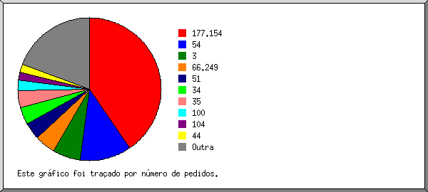
Mostrando as 20 primeiras organizações por número de pedidos, ordenadas por número de pedidos.
| N.ped | %bytes | organização |
|---|---|---|
| 93 | 0,06% | 177.154 |
| 22 | 21,17% | 54 |
| 15 | 7,01% | 51 |
| 15 | 10,65% | 3 |
| 13 | 3,71% | 34 |
| 13 | 10,23% | 35 |
| 7 | 4,74% | 104 |
| 6 | 4,54% | 44 |
| 5 | 4,01% | 38 |
| 5 | 3,74% | 186.227 |
| 4 | 2,63% | 52 |
| 4 | 0,76% | 18 |
| 4 | 3,27% | 72 |
| 4 | 2,22% | 200.160 |
| 3 | 1,61% | 17 |
| 2 | 2,97% | 13 |
| 2 | 1,48% | 167.172 |
| 2 | 0,74% | 165.227 |
| 2 | 1,48% | 68.183 |
| 1 | 0,80% | 185.216 |
| 22 | 12,17% | [não listadas: 22 organizações] |
(Ir a: Início | Sumário Geral | Relatório Mensal | Resumo Diário | Resumo Horário | Relatório de Domínios | Relatório de organizações | Relatório de referência falhada | Relatório do sítio de referência | Relatório de Leitores | Resumo de Leitores | Relatório de Sistemas Operativos | Relatório de Códigos de Estado | Relatório de Tamanho de Ficheiro | Relatório de Tipos de Ficheiro | Relatório de Directorias | Relatório de Pedidos)
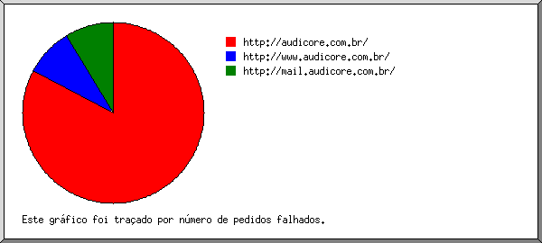
Mostrando os URLs de referência, ordenados por número de pedidos falhados.
| N.ped | URL |
|---|---|
| 16 | http://audicore.com.br/ |
| 1 | http://www.audicore.com.br/ |
| 1 | http://mail.audicore.com.br/ |
(Ir a: Início | Sumário Geral | Relatório Mensal | Resumo Diário | Resumo Horário | Relatório de Domínios | Relatório de organizações | Relatório de referência falhada | Relatório do sítio de referência | Relatório de Leitores | Resumo de Leitores | Relatório de Sistemas Operativos | Relatório de Códigos de Estado | Relatório de Tamanho de Ficheiro | Relatório de Tipos de Ficheiro | Relatório de Directorias | Relatório de Pedidos)
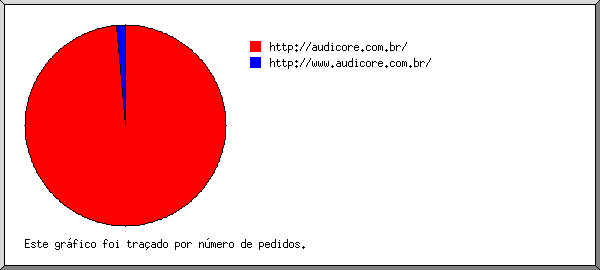
Mostrando os sítios de referência, ordenados por número de pedidos.
| N.ped | sítio |
|---|---|
| 42 | http://audicore.com.br/ |
| 1 | http://www.audicore.com.br/ |
(Ir a: Início | Sumário Geral | Relatório Mensal | Resumo Diário | Resumo Horário | Relatório de Domínios | Relatório de organizações | Relatório de referência falhada | Relatório do sítio de referência | Relatório de Leitores | Resumo de Leitores | Relatório de Sistemas Operativos | Relatório de Códigos de Estado | Relatório de Tamanho de Ficheiro | Relatório de Tipos de Ficheiro | Relatório de Directorias | Relatório de Pedidos)
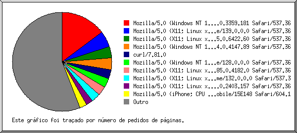
Mostrando os 40 primeiros leitores por número de pedidos de páginas, ordenados por número de pedidos de páginas.
| N.ped | Pgs. | Leitor |
|---|---|---|
| 14 | 14 | Mozilla/5.0 (Windows NT 10.0; Win64; x64)AppleWebKit/537.36 (KHTML, like Gecko) Chrome/66.0.3359.181 Safari/537.36 |
| 6 | 6 | Mozilla/5.0 (X11; Linux x86_64) AppleWebKit/537.36 (KHTML, like Gecko) Chrome/139.0.0.0 Safari/537.36 |
| 5 | 5 | Mozilla/5.0 (X11; Linux x86_64) AppleWebKit/537.36 (KHTML, like Gecko) HeadlessChrome/125.0.6422.60 Safari/537.36 |
| 11 | 4 | Mozilla/5.0 (X11; Linux x86_64) AppleWebKit/537.36 (KHTML, like Gecko) Chrome/132.0.0.0 Safari/537.3 |
| 4 | 4 | curl/7.81.0 |
| 7 | 3 | Mozilla/5.0 (iPhone; CPU iPhone OS 18_5 like Mac OS X) AppleWebKit/605.1.15 (KHTML, like Gecko) Version/18.5 Mobile/15E148 Safari/604.1 |
| 3 | 3 | Mozilla/5.0 (X11; Linux x86_64; rv:139.0) Gecko/20100101 Firefox/139.0 |
| 3 | 3 | Mozilla/5.0 (Windows NT 10.0; Win64; x64) AppleWebKit/537.36 (KHTML, like Gecko) Chrome/128.0.0.0 Safari/537.36 |
| 3 | 3 | Mozilla/5.0 (Macintosh; Intel Mac OS X 10_15_7) AppleWebKit/537.36 (KHTML, like Gecko) Chrome/128.0.0.0 Safari/537.36 |
| 4 | 3 | Mozilla/5.0 (Windows NT 10.0; Win64; x64) AppleWebKit/537.36 (KHTML, like Gecko) Chrome/95.0.4638.69 Safari/537.36 |
| 3 | 3 | Mozilla/5.0 (X11; Linux x86_64) AppleWebKit/537.36 (KHTML, like Gecko) Chrome/44.0.2403.157 Safari/537.36 |
| 2 | 2 | Mozilla/5.0 (Windows NT 10.0; Win64; x64) AppleWebKit/537.36 (KHTML, like Gecko) Chrome/78.0.3904.108 Safari/537.36 |
| 8 | 2 | Mozilla/5.0 (X11; Linux x86_64) AppleWebKit/537.36 (KHTML, like Gecko) HeadlessChrome/68.0.3440.106 Safari/537.36 |
| 6 | 2 | Mozilla/5.0 (Macintosh; Intel Mac OS X 10_15_7) AppleWebKit/537.36 (KHTML, like Gecko) Chrome/113.0.0.0 Safari/537.36 |
| 2 | 2 | Mozilla/5.0 (compatible; CMS-Checker/1.0; +https://example.com) |
| 6 | 2 | CheckMarkNetwork/1.0 (+http://www.checkmarknetwork.com/spider.html) |
| 2 | 2 | Mozilla/5.0 (compatible; CensysInspect/1.1; +https://about.censys.io/) |
| 6 | 2 | Mozilla/5.0 (iPhone; CPU iPhone OS 14_4 like Mac OS X) AppleWebKit/605.1.15 (KHTML, like Gecko) Version/15.4 Mobile/15E148 Safari/604.1 |
| 3 | 2 | Mozilla/5.0 (Macintosh; Intel Mac OS X 10_15_7) AppleWebKit/605.1.15 (KHTML, like Gecko) Version/17.4 Safari/605.1.15 (Applebot/0.1; +http://www.apple.com/go/applebot) |
| 1 | 1 | Mozilla/5.0 (iPhone; CPU iPhone OS 18_1_1 like Mac OS X) AppleWebKit/605.1.15 (KHTML, like Gecko) Version/18.1.1 Mobile/15E148 Safari/604.1 |
| 1 | 1 | Mozilla/5.0 (X11; CrOS armv7l 13904.41.0) AppleWebKit/537.36 (KHTML, like Gecko) Chrome/91.0.4472.81 Safari/537.36 |
| 1 | 1 | Mozilla/5.0 (Windows NT 10.0; Win64; x64) AppleWebKit/537.36 (KHTML, like Gecko) Chrome/134.0.0.0 Safari/537.36 |
| 4 | 1 | Mozilla/5.0 (Windows NT 10.0; Win64; x64; rv:109.0) Gecko/20100101 Firefox/109.0 |
| 1 | 1 | Mozilla/5.0 (X11; Linux x86_64) AppleWebKit/537.36 (KHTML, like Gecko) Chrome/137.0.0.0 Safari/537.36 |
| 1 | 1 | Mozilla/5.0 (Windows NT 10.0; Win64; x64) AppleWebKit/537.36 (KHTML, like Gecko) Chrome/138.0.0.0 Safari/537.36 |
| 1 | 1 | Mozilla/5.0 (Windows NT 10.0; Win64; x64) AppleWebKit/537.36 (KHTML, like Gecko) Chrome/42.0.2311.135 Safari/537.36 Edge/12.246 |
| 1 | 1 | Mozilla/5.0 (Windows NT 6.1; WOW64; rv:54.0) Gecko/20100101 Firefox/54.0 |
| 4 | 1 | Mozilla/5.0 (Windows NT 10.0; Win64; x64) AppleWebKit/537.36 (KHTML, like Gecko) Chrome/138.0.7204.97 Safari/537.36 |
| 1 | 1 | Mozilla/5.0 Firefox/33.0 |
| 1 | 1 | Mozilla/5.0 (Macintosh; PPC Mac OS X 10.9; rv:47.0) Gecko/20100101 Firefox/47.0 |
| 1 | 1 | Mozilla/5.0 (Windows NT 6.1; Win64; x64) AppleWebKit/537.36 (KHTML, like Gecko) Chrome/55.0.2883.87 Safari/537.36 |
| 1 | 1 | Mozilla/5.0 (X11; Linux x86_64) AppleWebKit/537.36 (KHTML, like Gecko) Chrome/125.0.0.0 Safari/537.36 |
| 1 | 1 | Mozilla/5.0 (Linux; Android 5.1.1; SM-J111F) AppleWebKit/537.36 (KHTML, like Gecko) Chrome/73.0.3683.90 Mobile Safari/537.36 |
| 1 | 1 | Mozilla/5.0 (Macintosh; Intel Mac OS X 10_15_7) AppleWebKit/605.1.15 (KHTML, like Gecko) Version/17.4.1 Safari/605.6.16 |
| 1 | 1 | Mozilla/5.0 (Windows NT 10.0; Win64; x64) AppleWebKit/537.36 (KHTML, like Gecko) Chrome/84.0.4147.89 Safari/537.36 |
| 1 | 1 | Mozilla/5.0 (Windows NT 6.1; Win64; x64; rv:25.0) Gecko/20100101 Firefox/29.0 |
| 1 | 1 | Mozilla/5.0 (X11; Linux i686) AppleWebKit/537.36 (KHTML, like Gecko) Chrome/129.0.0.0 Safari/537.36 |
| 4 | 1 | Mozilla/5.0 (Windows NT 10.0; Win64; x64) AppleWebKit/537.36 (KHTML, like Gecko) Chrome/137.0.0.0 Safari/537.36 |
| 1 | 1 | Mozilla/5.0 (Macintosh; Intel Mac OS X 10_15_7) AppleWebKit/537.36 (KHTML, like Gecko) Chrome/103.0.0.0 Safari/537.36 |
| 1 | 1 | Mozilla/5.0 (Windows NT 10.0; Win64; x64) AppleWebKit/537.36 (KHTML, like Gecko) Chrome/139.0.0.0 Safari/537.36 |
| 116 | 8 | [não listados: 13 Leitores] |
(Ir a: Início | Sumário Geral | Relatório Mensal | Resumo Diário | Resumo Horário | Relatório de Domínios | Relatório de organizações | Relatório de referência falhada | Relatório do sítio de referência | Relatório de Leitores | Resumo de Leitores | Relatório de Sistemas Operativos | Relatório de Códigos de Estado | Relatório de Tamanho de Ficheiro | Relatório de Tipos de Ficheiro | Relatório de Directorias | Relatório de Pedidos)
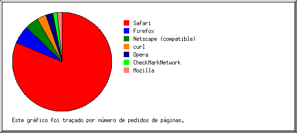
Mostrando os leitores com pelo menos 1 pedido de uma página, ordenados por número de pedidos de páginas.
| no. | N.ped | Pgs. | Leitor |
|---|---|---|---|
| 1 | 114 | 77 | Safari |
| 96 | 68 | Safari/537 | |
| 14 | 6 | Safari/604 | |
| 4 | 3 | Safari/605 | |
| 2 | 11 | 8 | Firefox |
| 3 | 3 | Firefox/139 | |
| 1 | 1 | Firefox/54 | |
| 4 | 1 | Firefox/109 | |
| 1 | 1 | Firefox/29 | |
| 1 | 1 | Firefox/47 | |
| 1 | 1 | Firefox/33 | |
| 3 | 10 | 4 | Netscape (compatible) |
| 4 | 4 | 4 | curl |
| 4 | 4 | curl/7 | |
| 5 | 6 | 2 | CheckMarkNetwork |
| 6 | 2 | CheckMarkNetwork/1 | |
| 6 | 5 | 1 | Mozilla |
| 94 | 0 | [não listados: 3 Leitores] |
(Ir a: Início | Sumário Geral | Relatório Mensal | Resumo Diário | Resumo Horário | Relatório de Domínios | Relatório de organizações | Relatório de referência falhada | Relatório do sítio de referência | Relatório de Leitores | Resumo de Leitores | Relatório de Sistemas Operativos | Relatório de Códigos de Estado | Relatório de Tamanho de Ficheiro | Relatório de Tipos de Ficheiro | Relatório de Directorias | Relatório de Pedidos)
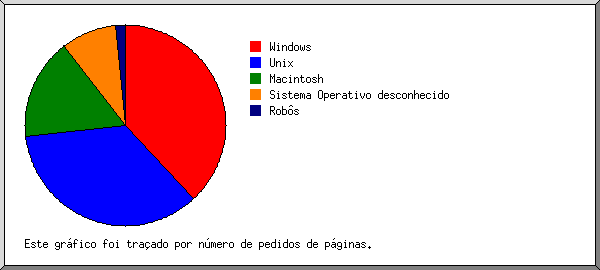
Mostrando os Sistemas Operativos, ordenados por número de pedidos de páginas.
| no. | N.ped | Pgs. | Sistema Operativo |
|---|---|---|---|
| 1 | 51 | 36 | Windows |
| 47 | 33 | Windows NT | |
| 3 | 3 | Windows desconhecido | |
| 1 | 0 | Windows XP | |
| 2 | 45 | 32 | Unix |
| 44 | 31 | Linux | |
| 1 | 1 | Outro Unix | |
| 3 | 34 | 17 | Macintosh |
| 4 | 108 | 9 | Sistema Operativo desconhecido |
| 5 | 6 | 2 | Robôs |
(Ir a: Início | Sumário Geral | Relatório Mensal | Resumo Diário | Resumo Horário | Relatório de Domínios | Relatório de organizações | Relatório de referência falhada | Relatório do sítio de referência | Relatório de Leitores | Resumo de Leitores | Relatório de Sistemas Operativos | Relatório de Códigos de Estado | Relatório de Tamanho de Ficheiro | Relatório de Tipos de Ficheiro | Relatório de Directorias | Relatório de Pedidos)
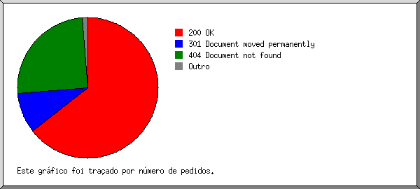
Mostrando os códigos de estado, por ordem numérica.
| N.ped | cod. estado |
|---|---|
| 244 | 200 OK |
| 18 | 301 Document moved permanently |
| 143 | 404 Document not found |
| 4 | 406 Document not acceptable to client |
| 1 | 409 Request conflicts with state of resource |
(Ir a: Início | Sumário Geral | Relatório Mensal | Resumo Diário | Resumo Horário | Relatório de Domínios | Relatório de organizações | Relatório de referência falhada | Relatório do sítio de referência | Relatório de Leitores | Resumo de Leitores | Relatório de Sistemas Operativos | Relatório de Códigos de Estado | Relatório de Tamanho de Ficheiro | Relatório de Tipos de Ficheiro | Relatório de Directorias | Relatório de Pedidos)
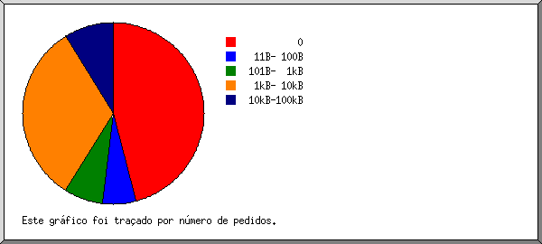
| tamanho | N.ped | %bytes |
|---|---|---|
| 0 | 109 | |
| 1B- 10B | 0 | |
| 11B- 100B | 14 | 0,12% |
| 101B- 1kB | 16 | 0,81% |
| 1kB- 10kB | 87 | 62,76% |
| 10kB-100kB | 18 | 36,31% |
(Ir a: Início | Sumário Geral | Relatório Mensal | Resumo Diário | Resumo Horário | Relatório de Domínios | Relatório de organizações | Relatório de referência falhada | Relatório do sítio de referência | Relatório de Leitores | Resumo de Leitores | Relatório de Sistemas Operativos | Relatório de Códigos de Estado | Relatório de Tamanho de Ficheiro | Relatório de Tipos de Ficheiro | Relatório de Directorias | Relatório de Pedidos)
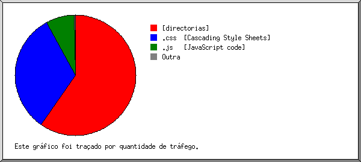
Mostrando as extensões com pelo menos 0,1% do tráfego, ordenadas por quantidade de tráfego.
| N.ped | %bytes | extensão |
|---|---|---|
| 96 | 63,96% | [directorias] |
| 39 | 32,85% | .css [Cascading Style Sheets] |
| 7 | 2,88% | .js [JavaScript code] |
| 4 | 0,19% | .txt [Plain text] |
| 13 | 0,11% | [extensão ausente] |
| 85 | [não listadas: 1 extensão] |
(Ir a: Início | Sumário Geral | Relatório Mensal | Resumo Diário | Resumo Horário | Relatório de Domínios | Relatório de organizações | Relatório de referência falhada | Relatório do sítio de referência | Relatório de Leitores | Resumo de Leitores | Relatório de Sistemas Operativos | Relatório de Códigos de Estado | Relatório de Tamanho de Ficheiro | Relatório de Tipos de Ficheiro | Relatório de Directorias | Relatório de Pedidos)
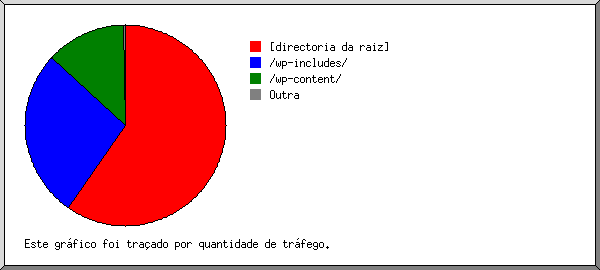
Mostrando as directorias com pelo menos 0,01% do tráfego, ordenadas por quantidade de tráfego.
| N.ped | %bytes | directoria |
|---|---|---|
| 181 | 63,72% | [directoria da raiz] |
| 14 | 22,03% | /wp-includes/ |
| 33 | 13,87% | /wp-content/ |
| 1 | 0,19% | /feed/ |
| 13 | 0,11% | /.well-known/ |
| 2 | 0,09% | /wp-json/ |
(Ir a: Início | Sumário Geral | Relatório Mensal | Resumo Diário | Resumo Horário | Relatório de Domínios | Relatório de organizações | Relatório de referência falhada | Relatório do sítio de referência | Relatório de Leitores | Resumo de Leitores | Relatório de Sistemas Operativos | Relatório de Códigos de Estado | Relatório de Tamanho de Ficheiro | Relatório de Tipos de Ficheiro | Relatório de Directorias | Relatório de Pedidos)
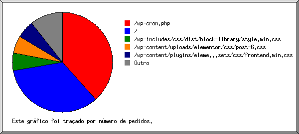
Mostrando os ficheiros com pelo menos 20 pedidos, ordenados por número de pedidos.
| N.ped | %bytes | hora ant. | ficheiro |
|---|---|---|---|
| 93 | 63,68% | 30/Ago/25 19:09 | / |
| 85 | 30/Ago/25 19:09 | /wp-cron.php | |
| 66 | 36,32% | 29/Ago/25 06:38 | [não listados: 17 ficheiros] |